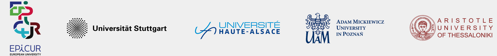
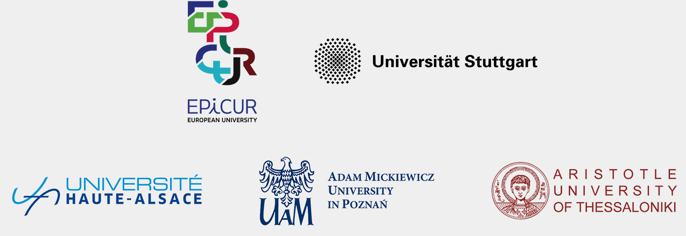

The Epicnutrients project aimed at creating scientific cooperation framework among different scientific disciplines, together with targeting the process of developing a novel fertilizer from the raw “waste” material to a final application. It also focused on social and political aspects of scientific practice, human and non-human actors and interactions between them.
The team created by Glykeria Duelli, Jamerson Carneiro de Oliveira, Georgios Giannopoulos, Elżbieta Kowalska and Jakub Alejski, applied for and realized the EPICluster Mobility Program. During the six months given by the program, Epicnutrients held on-site meetings at universities and laboratories, consulted on the project with mentors, external experts and the public. We get to know each other, talked and discussed, learned from each other and developed the foundations of an interdisciplinary research framework.
An important part of our research was the creation of a specially designed digital media environment that helps to visualize the key temporal, spatial, ecological, and cultural transformations involved in the process of trans-European scientific cooperation. Available on this website interactive diagram, named as “tempographies”, combines the knowledge of the five project work packages: the thematic of biowastes processing (Stuttgart), materials functionalization (UHA), environmental analysis (AUTh), art and science research (AMU) and culture and technology studies (AMU).
About
Considering the targets of EUGD for a 20% reduction of chemical fertilizers by 2030,
it is essential to optimize nutrient use and recovery.
The project was made possible thanks to The EPICluster Mobility Program as part of The EPICUR Alliance, co-funded by the ERASMUS+ Programme of the European Union. We want to thank everyone who helped us to develop this project. We received great support from EPICUR Administrators, project mentors, university workers, families and friends. Although this phase of the project has now ended, we look forward to working together again and further developing our research.


Website design and code: Elżbieta Kowalska, code supervision: Grzegorz Michlicki, coding support: Jakub Suwaj.